1. SE 423: Introduction to MechatronicsLecture 10: Communication ProtocolsMarius Juston
Monday, February 23rd 2026
2. Reminders
Office Hours:
- Monday: 4-6 PM, Neel
- Tuesday: 11-1 PM, Lakshmi
- Tuesday: 1-3 PM, Samuel
- Tuesday: 2-5 PM, Dan & Marius
Lab: Starting Lab 4 this week. This a 2-week lab!
Homeworks:
- Check-offs for homework 2 Ex 3 & 4 are due February 24, 5PM (The end of office hours)
- Answers and code submissions for homework 2 are due February 25, 9AM
LabVIEW:
- All check-offs for LabVIEW 2 are due February 26, 5PM
3. Questions?
Homework, Lab, LabVIEW questions?
4. Serial Communication
5. Serial Communication
Communication between different signal could happen in 2 ways,
Parallel communication vs Serial communication
Why not do parallel communication?
- Requires many I/O pins, these are already very limited
- With the wires, we can run into electromagnetic interference (EMI) and cross-talk
Serial communication, serializes data into single-bit stream, requires much less circuit complexity. What is the trade-off?
Time!
Serializing an N-bit word requires N discrete clock cycles!
6. Interferences
7. Serial Communication - Interferences
There are 4 interference couplings:
- Conductive: You have physical connection causing interference
- Inductive: source and victim are separated by a short distance (typically less than a wavelength). Can be of two kinds, electrical induction and magnetic induction.
-
- It is common to refer to electrical induction as capacitive coupling, and to magnetic induction as inductive coupling.
- Capacitive: occurs when a varying electrical field exists between two adjacent conductors, inducing a change in voltage on the receiving conductor.
- Inductive: magnetic coupling occurs when a varying magnetic field exists between two parallel conductors, inducing a change in voltage along the receiving conductor.
- Radiative: electromagnetic coupling occurs when source and victim are separated by a large distance. Source and victim act as radio antennas: the source emits or radiates an electromagnetic wave which is picked up or received by the victim.
https://en.wikipedia.org/wiki/Electromagnetic_interference
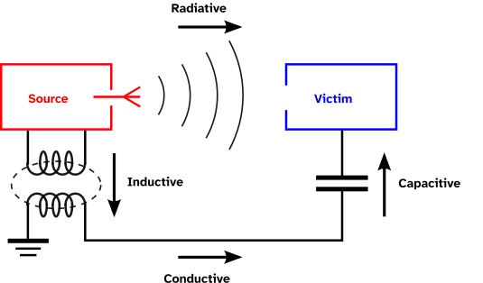
Air acts as a conductor as well
8. Serial Communication – Interferences - Capacitive
Let’s try to explain how we get capacitive interference!
Let be the time-varying voltage on the noisy source wires and be the voltage on the victim wire. Let be the mutual stray capacitance between the two wires (could be air), let the victim wire have a resistance of .
The fundamental equation for current through a capacitor is:
The current injected from wire 1 into wire 2, , is driven from the difference between them across the capacitor.
In practice, the noise source voltage is much larger than the victim’s wire (), which allows the voltage derivative to simplify to:
9. Serial Communication - Interferences - Capacitive
By Ohm’s law, the inject noise current flows through the victim’s wire impedence to ground (), creating a noise voltage:
The interference voltage is directly proportion to the rate of change of the source voltage, even if the actual voltage amplitude is moderate!
What causes more digital signal interference?
High-frequency vs low-frequency
Assuming a duty cycle of 50%?
EPwm7Regs.TBPRD = 5000; EPwm7Regs.TBPRD = 500;
10. Serial Communication – Interferences - Inductive
Let’s try to explain how we get inductive interference!
Coupling between the circuits can occur when the magnetic field lines from one of the circuits pass through the loop formed by the other circuit.
Magnetic coupling is governed by Ampere's Law and Faraday's Law of Induction. A time-varying current in a source wire generates a time-varying magnetic field, which penetrates the loop area formed by the victim wire and its ground return path, inducing an electromotive force (EMF).
Let be the time-varying current for. Assuming it is a long, straight wire, we use Ampere’s Law () to find the magnetic field at radial distance :
(there , is the permeability of free space and represents the flux)
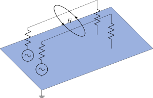
11. Serial Communication – Interferences - Inductive
If the victim wire forms a rectangular loop ( not often the case but good enough for showing this specific case), with it’s return path. Having a length and distance and from the source wire. The magnetic flux , though this loop is the surface integral of the magnetic field.
Animate this!
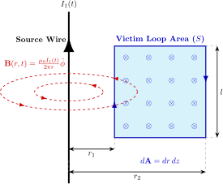
12. Serial Communication – Interferences - Inductive
Integrating the field across the area.
Substituting and integrating over the area :
13. Serial Communication – Interferences - Inductive
Faraday’s Law states that the induced voltage (EMF) in a closed loop is equal to the negative rate of change of magnetic flux through the loop:
Substituting we get:
14. Serial Communication - Interferences - Capacitive
Thus, given the final inference noise,
The interference voltage is directly proportion to the rate of change of the current in the interfering wire!
This is why heavy machinery or circuits that draw massive, pulsating currents (like motor drives) are notorious sources of magnetic Electromagnetic Interference (EMI)!
15. Serial Communication
16. Notation
17. Serial Communication – Multiple Devices
We want to be able to communicate with multiple devices. We can a “Master / Slave” paradigm in communication.
“Master / Slave” is still commonly used but sometimes called Peripheral In and Peripheral Out.
The “Master” Node, holds the authority to initiate data transfers and generates the synchronization clock.
The “Slave” Nodes are strictly reactive and remain low until explicitly addressed.
Think of it as the “Master” node as a “Teacher” asking you to do something, the “Slave” nodes are the “students” doing the work and reporting the results back.
18. Serial Communication – Multiple Devices


19. Serial Communication – Asynchronous Communication
Asynchronous networks (SCI/UART) operate without a shared, physical clock line routing between nodes.
Nodes rely on independent, internal clocks that must be pre-configured to a matching baud-rate! ( Remember the UART lecture? )
What could be some issue?
- You don’t properly communicate the correct baud rate
- The internal clocks could drift causing the receiver to sample data out of phase, corrupting the data
20. Serial Communication – Synchronous Communication
Synchronous networks (SPI/I2C) operate with a shared, physical clock line routing between nodes. The Master node routes a clock to all Slave devices.
This shared clock signal dictates the precise times that data lines are driven and sampled!
What could be some issue?
- Extra wiring required, at least one for the clock and one for the data
21. Serial Communication – Simplex vs Half-Duplex vs Full-Duplex
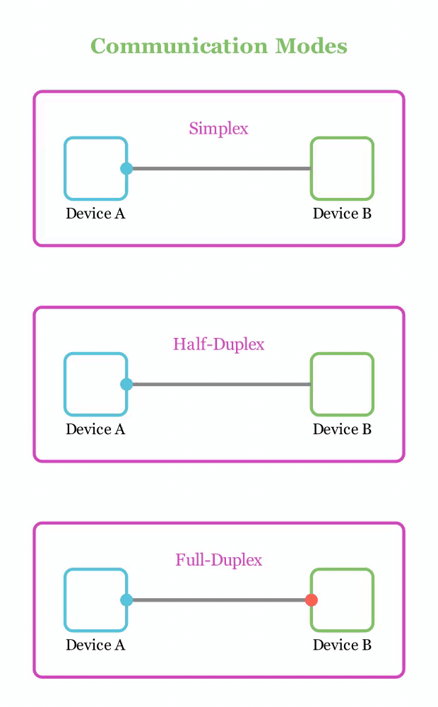
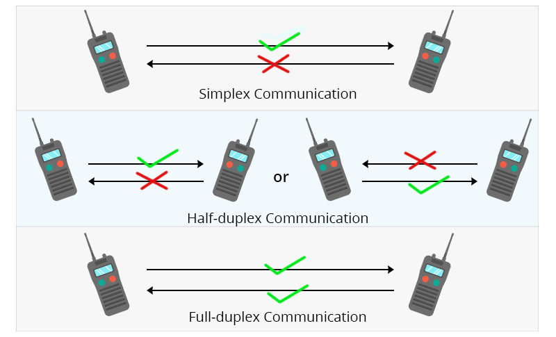
22. Protocols
23. Serial Communication
The Red Board supports a lot of communication protocols:
- SCI – Serial Communications Interface - The classic UART. It is asynchronous, requiring only two wires (TX/RX), but limited in speed due to the lack of a shared clock. Discussed in Lecture 4.
- SPI – Serial Peripheral Interface - A high-speed synchronous serial input and output (I/O) port. It requires four wires and dominates high-frequency sensor and motor driver applications. Discussed in Lecture 6-7
- I2C – Inter-Integrated Circuit Module - A synchronous, two-wire bus using software addressing rather than hardware routing. Uses less wires some can be advantageous over SPI.
24. Serial Communication
The Red Board supports a lot of communication protocols:
- CAN – Controller Area Network - A highly robust, differential-signaling serial bus designed for automotive environments. It prioritizes message IDs and deterministic collision resolution over raw speed.
- McBSP – Multichannel Buffered Serial Port - A high-speed synchronous serial port capable of handling complex audio streams and telecommunications data.
- USB – Universal Serial Bus - A complex, differential standard used primarily for interfacing the embedded system with host PCs for data logging or firmware updates.
- uPP - Universal Parallel Port - A high-speed parallel interface used for connecting directly to FPGAs or massive data-acquisition modules (high-speed ADC).
25. SCI / UART
26. Serial Communication – SCI / UART
Asynchronous: No shared clock wire. Timing relies on agreed-upon Baud Rate.
init_serialSCIA(&SerialA,115200);
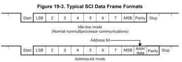
27. SPI
28. Serial Communication - SPI
This is full-duplex protocol, capable of simultaneous transmission and reception during a single clock cycle.
Multi-device communication is supported by the master or slave operation of the SPI.
Has 4 wires:
- SPICLK: The SPI serial-clock pin, supplying the synchronous heartbeat
- SPISIMO: The SPI slave-input/master-output pin
- SPISOMI: The SPI slave-output/master-input pin
- SPISTE: The SPI slave transmit-enable pin
All four pins can be used as general-purpose input/output (GPIO) if the SPI module is not used by the system
29. Serial Communication - SPI

30. Serial Communication - SPI
Has 2 interrupt signal:
- SPIINT: Transmit interrupt/ Receive Interrupt in non-FIFO mode
- SPIRXINT: Receive interrupt in FIFO mode
- SPITXINT: Transmit interrupt in FIFO mode
Can also integrate with the DMA (limited to 16-bit register read/writes and only works when FIFO is enabled)
- SPITXDMA: Transmit request to DMA
- SPIRXDMA: Receive request to DMA
31. Serial Communication – SPI - SPICLK
The SPI module supports 125 different baud rates using the SPIBRR register:
For SPIBRR = 3 to 127:
For SPIBRR = 0, 1, or 2:
LSPCLK = Low-speed peripheral clock frequency of the device. Like the ePWM it is 50 MHz.
In master mode, the SPI clock is generated by the SPI and is output on the SPICLK pin.
32. Serial Communication – SPI – SPISIMO (Master Output)
The SPISIMO pin acts as the primary transmission pin from the controller to the peripheral
If the MCU (Microcontroller Unit), is configured as the master, data is shifted out of it’s transmit buffer and onto this line!
If the MCU is configured as a slave, this pin receives the incoming data from the network’s master.
33. Serial Communication – SPI – SPISOMI (Master Input)
The SPISOMI pin acts as the primary receiver pin from the peripheral back to the MCU.
When the SPI transmits data, it can receive characters simultaneously, placing them in the receiver buffer SPIRXBUF.
The incoming data is stored right-justified within this register
34. Serial Communication – SPI – SPISTE (Slave Transmit Enable)
The SPISTE provides the ability to gate any clock and data pulses when SPI is in slave mode.
An active SPISTE will not allow the slave to receive data, preventing the SPI slave from losing synchronization with the master.
Toggling the SPISWRESET bit will reset the internal bit counter and allow a desynchronized slave to recover.
35. Serial Communication - SPI
https://en.wikipedia.org/wiki/Serial_Peripheral_Interface
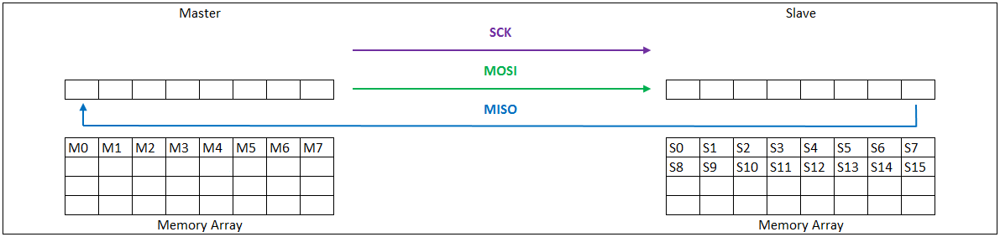
36. Serial Communication – SPI – 3-wire mode
The system can be compressed by setting the TRIWIRE bit to 1, enabling a 3-wire SPI mode.
SPI 3-wire mode allows for SPI communication over three pins instead of the normal four pins.
Because in 3-wire mode, the receive and transmit paths within the SPI are connected, any data transmitted by the SPI module is also received by itself. The application software must take care to perform a dummy read to clear the SPI data register of the additional received data.
This helps reduce pin count on your microcontroller when interfacing with peripherals that do not require full-duplex communication.
If you only need to send/read commands and occasionally read/send data (not simultaneously), 3-wire saves wiring complexity without losing functionality.
37. Serial Communication – SPI
To successfully transmit data, the master and slave must share an identical clock wave mapping.
The clock polarity select bit (CLKPOLARITY) and the clock phase select bit (CLK_PHASE) control four different clocking schemes on the SPICLK pin.
CLKPOLARITY selects the active edge, either rising or falling, of the clock
CLK_PHASE selects a half-cycle delay of the clock.
Very dependent on your sensor, look at and understand your dataset to know what is expected!
If CLKPOLARITY and CLK_PHASE can only 0 or 1 each, how many different modes are there available?
4 Modes!
38. Serial Communication – SPI
Rising Edge Without Delay: CLKPOLARITY = 0 and CLK_PHASE = 0
- The SPI transmits data on the rising edge of the SPICLK signal.
- The SPI receives data on the falling edge of the SPICLK signal.
Rising Edge With Delay: CLKPOLARITY = 0 and CLK_PHASE = 1
- The SPI transmits data one half-cycle ahead of the rising edge of the SPICLK signal.
- The SPI receives data on the rising edge of the SPICLK signal.
Falling Edge Without Delay: CLKPOLARITY = 1 and CLK_PHASE = 0
- The SPI transmits data falling edge of the SPICLK signal.
- The SPI receives data on the rising edge of the SPICLK signal.
Falling Edge With Delay: CLKPOLARITY = 1 and CLK_PHASE = 1
- The SPI transmits data one half-cycle ahead of the falling edge of the SPICLK signal.
- The SPI receives data on the falling edge of the SPICLK signal.
39. SPI

| Polarity | Phase |
|---|---|
| 0 | 0 |
| 0 | 1 |
| 1 | 0 |
| 1 | 1 |
40. SPI
What is this registry?
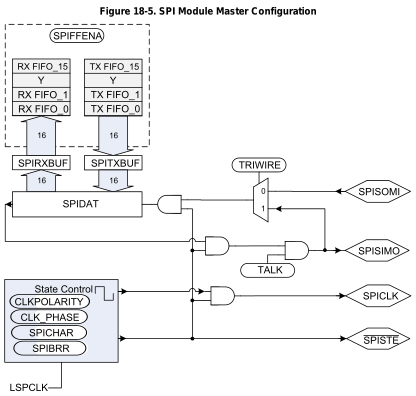
41. Serial Communication – SPI – Multiple Slaves
The problem is that this can only allow you to communicate to one peripheral, what about if you want to communicate multiple peripherals, i.e., addressing all your wheel motors individually?
In many systems, a SPI master may be connected to multiple SPI slaves using multiple instances of SPISTE (You selectively choose which SPI slave to enable and read the incoming data).
Though this SPI module does not natively support multiple SPISTE signals, it is possible to emulate this behavior in software using GPIOs.
In this configuration, the SPI must be configured as the master. Rather than using the GPIO Mux to select SPISTE, the application would configure pins to be GPIO outputs, one GPIO per SPI slave.
Before transmitting any data, the application would drive the desired GPIO to the active state.
Immediately after the transmission has been completed, the GPIO chip select would be driven to the inactive state. This process can be repeated for many slaves which share the SPICLK, SPISIMO, and SPISOMI lines! Essentially creating a SPISTE pin mux!
42. What happens if you want to communicate with 15 temperature sensors?
Speaker notes
Correct, you would need 15 SPISTE wires to route between the different sensors, this complicates the circuit and, more wires also means more potential interference!
43. I2C
44. Serial Communication – I2C
The I2C bus consists of 2 wires: Serial Data (SDA) and Serial Clock (SCL). Instead of relying active push-pull transistors like SPI (which forces a line high or low), I2C uses an open-draw architecture with passive pull-up resistors.
When a microcontroller wants to send a logical 1, it simply “lets go” of the wire, and the physical pull-up resistor pulls the voltage to (e.g., 3.3V). When it wants to send a logical 0, an internal transistor connects the wire to ground.
Why?
If 2 devices accidentally talk at the exact same time, and one sends a 0 (pulls to ground), while the other sends a 1 (let’s go), the line safely goes to ground. There is no short circuit!
45. Serial Communication – I2C
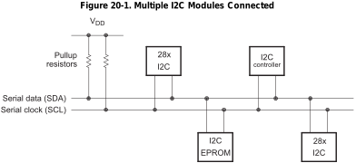
46. Serial Communication – I2C
![Block diagram of the TI I2C module. Bidirectional SDA and SCL pins connect to the module. To transmit, the CPU writes over the peripheral bus to I2CDXR (or through the TX FIFO), which loads the I2CXSR shift register that drives SDA. To receive, SDA shifts into I2CRSR, then I2CDRR, which the bus reads directly or via the RX FIFO. TX and RX FIFO interrupts are ORed into a FIFO interrupt to the CPU/PIE. Control/status registers sit on the bus. A clock synchronizer, prescaler, noise filters and arbitrator support the link. Seven interrupt sources combine into I2C INT to the CPU/PIE.](L10_files/77123d734e8d.svg)
47. Serial Communication – I2C
Because there is no Chip Select wires, the Master must should a specific “Address” onto the bus. Every slave device listens. The protocol is strictly framed as:
- START condition: The Master pulls SDA low while SCL remains high. This violates normal data rules, acting as a wake-up for all devices.
- Addressing: The Master transmits a 7-bit (or 10-bit) hardware addres, folled by a Read/Write direction bit.
- Acknowledge (ACK): The specific Slave that matches the address pulls the SDA line low on the 9th clock cycle to say “I am here”
- Data Transfer: Butes are clocked across the SDA line
- STOP Condition: The Master releases SDA while SCL is high, signaling the bus is free.
48. Serial Communication – I2C
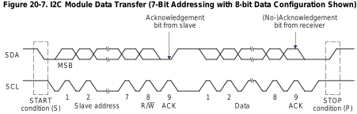
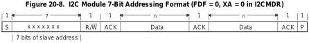
R/W=0: The I2C master writes (transmits) data to the addressed slave.
R/W=1: The I2C master reads (receives) data from the slave.
49. Serial Communication – I2C
An extra clock cycle dedicated for acknowledgement (ACK) is inserted after each byte.
If the ACK bit is inserted by the slave after the first byte from the master, it is followed by n bits of data from the transmitter (master or slave depending on the R/W bit).
n is a number from 1-8 determined by the bit count (BC) field of the I2CMDR.
After the data bits have been transferred, the receiver inserts an ACK bit.
We can have a 10-bit slave address. The problem is that we have a maximum of 8 bits that we send at a time!
50. Serial Communication – I2C
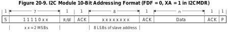
51. Serial Communication – I2C
I2C allows multiple MCU to exist on the same two wires, potentially attempting a START condition simultaneously.
Both Masters begin clocking out their addresses bit-by-bit, monitoring the actual voltage on the SDA line.
If Master A transmits a 1 (lets go) but physically measures a 0 on the SDA line, it determines another Master (Master B) is pulling it low.
Master A instantly realizes it has lost arbitration, ceases transmission, and returns to slave/listening mode without corrupting Master B's packet.
52. Serial Communication – I2C
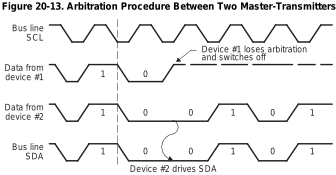
53. If you have 2 masters sending Serial Clock (SCL) signals what is a problem?
Speaker notes
How do we get the electrical signals to agree on a single clock wave?
54. Serial Communication – I2C
The microcontrollers on the bus can only drive the SCL line as such:
- Drive LOW: They can turn on an internal transistor to connect the SCL line to ground (0V)
- Release HIGH: They can turn off the transistor, letting go of the line. They cannot force the line high; they rely entirely on the pull-up resistor to pull the voltage back up
Because of this, the SCL line acts as a massive physical AND gate.
- The SCL line will only transition HIGH if ALL devices let go of it.
- The SCL line will instantly transition LOW if ANY device pulls it to ground.
55. Serial Communication – I2C
Masters attempt to begin their clock cycles by pulling the SCL line LOW.
Whichever Master pulls the line LOW first instantly forces the entire physical bus to 0V.
The other Masters, seeing the line go LOW, immediately synchronize its internal state machine to this falling edge and beings counting its own programmed LOW period
The synchronized LOW period is strictly determined by the Master with the longest programmed LOW period.
The synchronized HIGH period is strictly determined by the Master with the shortest programmed HIGH period.
If a device pulls down the clock line for a longer time, the result is that all clock generators must enter the wait state. In this way, a slave slows down a fast master, and the slow device creates enough time to store a received byte or to prepare a byte to be transmitted.
56. Serial Communication – I2C
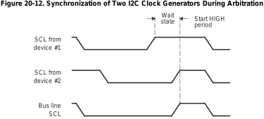
57. I2C Code
58. Serial Communication – I2C - Init
void I2CA_Init(void) {
// 1. Set the Prescaler to generate the Module Clock
I2caRegs.I2CPSC.all = 16; // Divides high-speed system clock down to ~7-12 MHz
// 2. Define the exact characteristics of the SCL wave
I2caRegs.I2CCLKL = 10; // Defines the duration of the SCL LOW period
I2caRegs.I2CCLKH = 5; // Defines the duration of the SCL HIGH period
// 3. Enable Interrupts for critical network events
I2caRegs.I2CIER.all = 0x24; // Enable Start Condition Detected (SCD) & Register Access Ready (ARDY)
// 4. Take the I2C module out of reset
I2caRegs.I2CMDR.all = 0x0020;
// 5. Enable the 16-level Transmit and Receive FIFOs
I2caRegs.I2CFFTX.all = 0x6000; // Enable FIFO mode and TXFIFO
I2caRegs.I2CFFRX.all = 0x2040; // Enable RXFIFO and clear interrupt flags
}
Notice that I2CCLKL (10) is mathematically larger than I2CCLKH (5). Because the physical bus relies on passive pull-up resistors to transition HIGH, the rise-time is inherently slower, compared to the transistors, than the fall-time (which is actively pulled LOW by a transistor).
59. Serial Communication – I2C - Init
Uint16 I2CA_WriteData(struct I2CMSG *msg) {
// 1. Verify if the previous message completed?
if(I2caRegs.I2CMDR.bit.STP == 1) {
return I2C_STP_NOT_READY_ERROR;
}
// 2. Verify if another Master using the bus?
if(I2caRegs.I2CSTR.bit.BB == 1) {
return I2C_BUS_BUSY_ERROR;
}
// 3. Broadcast the Slave's address (EEPROM is typically 0x50)
I2caRegs.I2CSAR.all = msg->SlaveAddress;
// 4. Define exactly how many bytes we will transmit
// (2 bytes for the EEPROM memory address + the actual data bytes)
I2caRegs.I2CCNT = 2 + msg->NumOfBytes;
// 4. Push the EEPROM memory pointer into the Transmit FIFO (think of the Slave's address as the apartment address and this as setting the specific apartment number we want to write to)
I2caRegs.I2CDXR.all = msg->MemoryHighAddr;
I2caRegs.I2CDXR.all = msg->MemoryLowAddr;
// 5. Push the actual data payload into the Transmit FIFO
for (int i = 0; i < msg->NumOfBytes; i++) {
I2caRegs.I2CDXR.all = *(msg->MsgBuffer + i);
}
// 6. Command the hardware to execute the transaction
// 0x6E20 sets: FREE (run during debug), START, STOP, MASTER, TRANSMIT, and ENABLE bits
I2caRegs.I2CMDR.all = 0x6E20;
return I2C_SUCCESS;
}